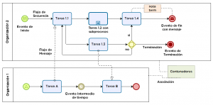
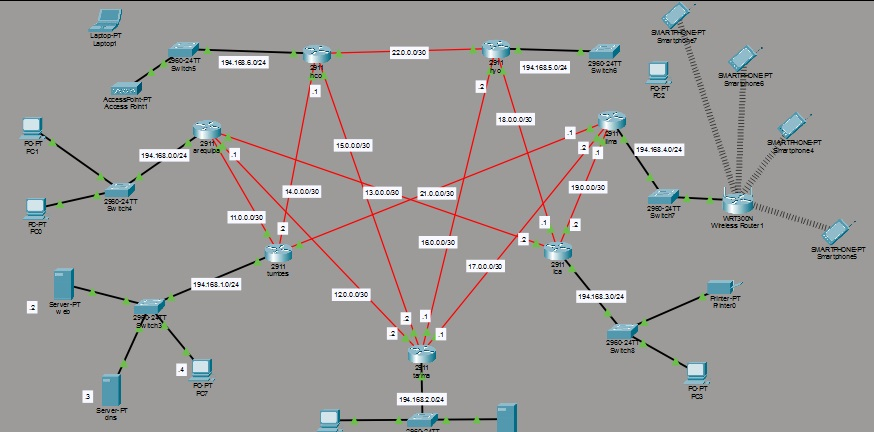

Sistema Web de Gestión Académica
Plataforma para matrículas, notas y reportes académicos con panel administrativo.
Python/Django
HTML
CSS
MySQL

Base de Datos para Institución Educativa
Modelo relacional completo con procedimientos y reportes académicos.
MySQL
SQL
Modelado ER

Tacho Inteligente
Contenedor con sensor ultrasónico y alerta de llenado automatizada.
Arduino
C++
Ultrasónicos

Portafolio Web Profesional
Este portafolio: glassmorphism, animaciones y despliegue Docker.
HTML
CSS
JavaScript
Docker

Semáforo Inteligente
Semáforo con Arduino y secuencias de LEDs programables.
Arduino
C++
LEDs

Cableado Estructurado de una Edificación
Infraestructura de red física según normas TIA/EIA con rack y patch panel.
TIA/EIA
Rack
Patch panel

Diseño y Gestión de Procesos de una Organización
Mapeo BPMN AS-IS/TO-BE con indicadores y simulación en Bizagi.
BPMN
Bizagi
Flujogramas

Proyectos RSU — Enseñanza en Colegios
Talleres de TIC y pensamiento computacional en colegios de Huánuco.
Didáctica
TIC
Trabajo en equipo

Domótica — Automatización del Hogar
Automatización con ESP32, sensores y app móvil en desarrollo.
Arduino
ESP32
Sensores

Diseño de Topología y Redes Protocolo Estático
Red empresarial en Packet Tracer con OSPF, VLANs y routing estático.
Packet Tracer
OSPF
Static Routing